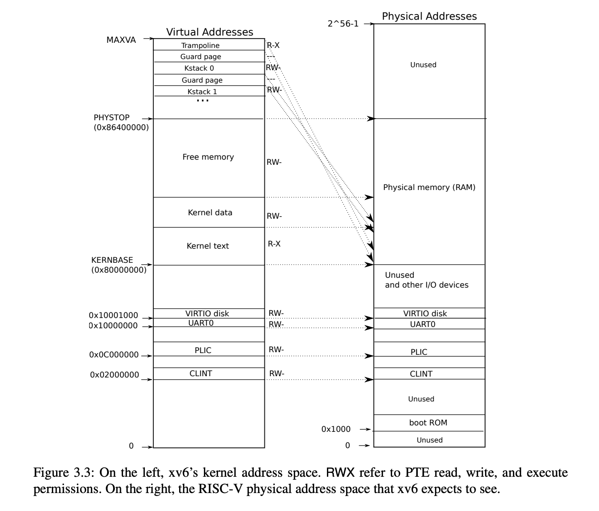

The code is in kalloc.c
The physical memory allocation in xv6 is very simple, it uses free list to manage physical memory. xv6 divides physical memory into pages with 4 KB for each page.
Free list is the most simple data structures to alllocate memory. It is only a linked list to include all free pages.
Let's look at the data structure of free list. run is a linked node containing one page, it links to next free page. One important fact is that run does not consume extra memory, each run node data is directly put into the page assigned to it.
As for kmem, it maintains a freelist and also a spinlock. A spinlock is required when accessing freelist because freelist is shared data.
struct run {
struct run *next;
};
struct {
struct spinlock lock;
struct run *freelist;
} kmem;
Init kenerl physical mem when booting. freerange is to create a initial free list.
extern char end[]; // first address after kernel.
// defined by kernel.ld
void
kinit()
{
initlock(&kmem.lock, "kmem");
freerange(end, (void*)PHYSTOP);
}
The key of above code is to understand the end. Focus on KERNBASE and PHYSTOP at the following. KERNBASE is a starting address to load kernel code, data. And after kernel data block, we can find a free memory block, which is managed by freelist here. And end is the first address after kenerl data block and also first address of free memory block, so the address of run node also is a page's starting address.

And the interfaces to access kalloc is simple too.
void * kalloc(void); // allocate a page
void kfree(void *pa);// free a page
Let's look at kalloc. Getting the first node in freelist and then rturn it.
// Allocate one 4096-byte page of physical memory.
// Returns a pointer that the kernel can use.
// Returns 0 if the memory cannot be allocated.
void *
kalloc(void)
{
struct run *r;
acquire(&kmem.lock);
r = kmem.freelist;
if(r)
kmem.freelist = r->next;
release(&kmem.lock);
if(r)
memset((char*)r, 5, PGSIZE); // fill with junk
return (void*)r;
}
pa is a starting address of a page, it should stays between end and PHYSTOP. And then pa is put into head of freelist.
// Free the page of physical memory pointed at by v,
// which normally should have been returned by a
// call to kalloc(). (The exception is when
// initializing the allocator; see kinit above.)
void
kfree(void *pa)
{
struct run *r;
if(((uint64)pa % PGSIZE) != 0 || (char*)pa < end || (uint64)pa >= PHYSTOP)
panic("kfree");
// Fill with junk to catch dangling refs.
memset(pa, 1, PGSIZE);
r = (struct run*)pa;
acquire(&kmem.lock);
r->next = kmem.freelist;
kmem.freelist = r;
release(&kmem.lock);
}